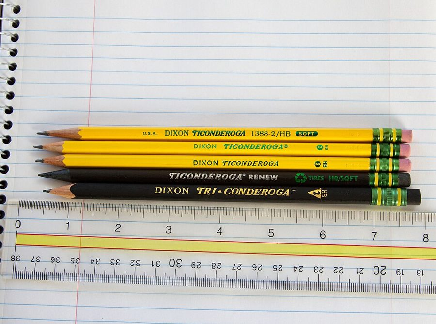
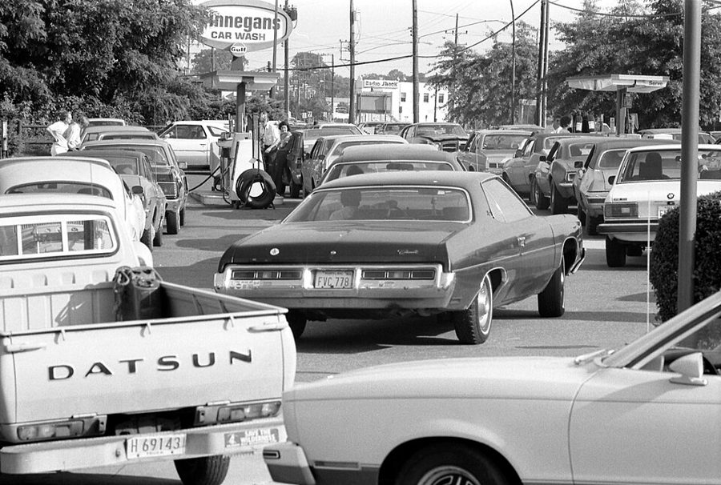
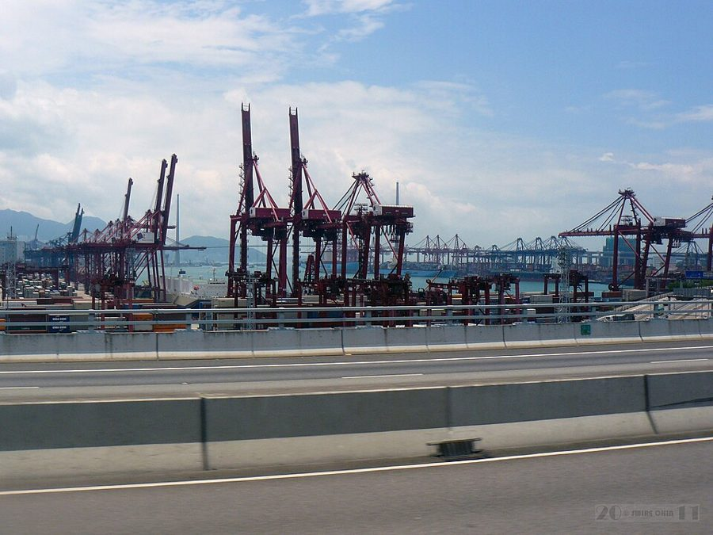

这一章在做什么
这一章是全书的地基。作者从一支铅笔讲起：世上没有一个人知道怎么从头造一支铅笔，可它天天被造出来，靠的是价格。价格同时做三件事：传递信息、提供激励、决定收入，三件事拆不开。接着作者给政府划了四项职责，并要求想让政府多管一件事的人先拿出账来。最后拿香港和 19 世纪的英美说明这不是空想。读的时候抓两条线：价格为什么拆不开；政府的边界画在哪。

今天美国常见的黄杆铅笔。§2 那支讲自己家谱的铅笔，木头来自加州和俄勒冈，石墨来自锡兰，橡皮里有荷属东印度的菜籽油。Scaredpoet，CC BY-SA 3.0，维基共享资源 读之前：先下注
引言讲了美国的两个「奇迹」和它们背后的两套观念（亚当·斯密的《国富论》、杰斐逊的《独立宣言》）。第 1 章把前一套落到实处，给出全书反复用的两样工具：价格的三种功能 和政府的四项职责 。后面九章，每一章拿一个领域（贸易、货币、福利、教育、监管……）来套这两样工具，所以这一章读扎实了，后面会快很多。全书是 Milton 和 Rose Friedman 夫妇合写的，下面说「作者」指他们两位。
1979 年夏天，美国加油站排起了长队；德国和日本的石油几乎全靠进口，却没有排队。你觉得主要原因是什么？
美国比德国、日本更依赖中东的石油
美国政府压着油价，还按地区分配汽油
石油公司囤油不卖，等着涨价
美国人开大车、住得远，用油太多
媒体渲染短缺，大家一起抢购
一个想让每个人尽量自由选择的社会，政府至少该管哪些事？
只管国防和治安，别的一概不管
国防治安，再加上法院和定规矩
再加上修路这类私人不愿干、对社会又划算的事
再加上照顾不能对自己负责的人，比如孩子
远不止这些：教育、养老、医疗、缩小贫富差距都该管
千百万互不相识、说不同语言、甚至彼此憎恨的人，没有人下命令，怎么合作造出一支铅笔？政府在这里面该干什么，不该干什么？
作者说自愿交换是繁荣和自由的必要条件，却不是充分条件。两种说法差在哪？他拿什么支持前一半？§1
价格「决定收入」这件事，为什么不能和另外两件拆开？你被说服了吗？§3
作者承认外部性是「市场失灵」，为什么又说它不一定是政府出手的理由？§5
香港和 19 世纪的美国，作者各拿来反驳什么说法？§6
这一章的论证骨架
这一章前后是两半：前半（§1–§4）讲市场怎样不靠命令把人组织起来，后半（§5–§6）讲政府该站在哪。前半最长的 §3 有三个小标题，各讲价格的一种功能，第三个（收入分配）最容易读散，因为作者在那里顺手批评了苏联和「只要效率、不要价格分配收入」的想法。
千百万陌生人怎样合作？
命令（军队的办法）
只在小群体里行得通 · §1
自愿交换（市场）
双方都觉得划算才成交 · §3
价格的三种功能 · §3
传递信息
提供激励
决定收入
三者拆不开
§4 推广：语言、科学、
风俗也是这样长出来的
政府的职责 · §5
国防与治安
司法与规则
公共工程·外部性
照顾不能自负的人
前三项是斯密的，第四项是作者加的；想多管一件事，举证责任在提议的一方
实例 · §6：香港，19 世纪的英国和美国
本站画的示意图。§4 是一段旁支：作者把「没人设计却自己长出来的秩序」推广到语言和科学，用来回答「自利就是自私」的指责。 边读边填：每行一个问题，读到答案就写一两句。只存在你这台设备的浏览器里，别人看不到。
读完了？对照我找到的
命令：农场工人的自留地；劳动力靠工资招来而不是派来；莫斯科修家电找国营修理站的人私下干活。
信息：只传「有人愿意多付钱、这价钱会维持多久」；为什么涨、谁要用，都不用传。
激励：涨价补上了多产的额外成本，所以既有理由多产，也付得起多产的代价。
收入：没人会去找信息、按信息行事，只剩命令；Red Adair 去扑油井大火的例子。
政府：第三项（公共工程），因为几乎什么事都有第三方影响，它能被拿来为任何干预辩护。
实例：19 世纪的英国、明治初年的日本、今天的香港都不是地广人稀；「在香港待一小时」。
分节地图
原书这一章没有给节编号。§1 是第一个小标题之前的开篇（照抄的是第一段开头几个词），§2–§6 的粗体是书里印的全大写小标题，Kindle 里可以直接搜。每一节下面自动标出纸书页码、在本章录音里大约第几分钟、译本里对应的小节名。建议分三次读；读完一节回来打个勾。
第一次坐下§1–§2 · 约 1600 词 · 两种组织办法，一支铅笔
Every day each of us uses…约 1000 词 命令和自愿交换两种办法；苏联的例子；末段「必要条件」是全书的总论点，读两遍。 COOPERATION THROUGH VOLUNTARY EXCHANGE约 600 词 讲那篇铅笔自述的短文。看作者从故事里抽出了哪两个「惊人」之处。 第二次坐下§3 · 约 4400 词 · 价格的三种功能，全章最长
THE ROLE OF PRICES约 4400 词 先讲加油站排队，再分三个小标题讲信息、激励、收入分配。第三个小标题最难，抓「为什么拆不开」。 第三次坐下§4–§6 · 约 4700 词 · 推广到市场之外，再给政府划边界
A BROADER VIEW约 900 词 语言、科学、音乐怎样没人设计却成了形；结尾替「自利」正名。 THE ROLE OF GOVERNMENT约 2400 词 一大段斯密原文，然后逐条解释三项职责，再加第四项。外部性那几段最要紧。 LIMITED GOVERNMENT IN PRACTICE约 1400 词 香港、19 世纪英国和美国。留意作者怎样回应「强盗大亨」的说法。
背景：作者默认你知道的事
按在书里出现的顺序排，标题前是节号。书写于 1979 年，书里的「今天」「近来」都是那时候。
§1 苏联的自留地，柬埔寨，甜蜜素苏联的集体农庄和国营农场允许职工在宅旁种一小块自留地，产品可以自己吃或拿去集市卖。书里说的「1930 年代的饥荒」是农业集体化之后的大饥荒。「柬埔寨最近的经历」指 1975–1979 年红色高棉执政，废除货币和市场，大批人死于饥饿、劳役和处决。§1 末尾提到的 cyclamates 是人工甜味剂甜蜜素，美国 1969 年宣布禁用，作者拿它当政府「命令」的一个日常例子。
§2 那篇铅笔的自述《我，铅笔》（I, Pencil）是 Leonard E. Read 1958 年写的短文，用一支铅笔的口吻讲它的家谱。Read 创办了宣传自由市场的经济教育基金会（Foundation for Economic Education）。译本把篇名译成《铅笔的家世》。文中的锡兰（Ceylon）是今天的斯里兰卡，荷属东印度（Dutch East Indies）是今天的印度尼西亚；Wilkes-Barre 是宾夕法尼亚州的一座城市。
§3 1974 年和 1979 年的加油站长队1973 年 10 月第四次中东战争后，阿拉伯产油国对美国等国禁运石油，欧佩克（OPEC）把油价抬到原来的约四倍；1979 年伊朗革命又让原油供应骤减。美国当时对石油和汽油实行价格管制，并由政府按地区分配汽油，结果是有的地方油多、有的地方排长队，有的州按车牌单双号限制加油日。书里说的能源部（Department of Energy）是 1977 年成立的。

1979 年 6 月 15 日，马里兰州一座加油站前排队的汽车。Warren K. Leffler，公有领域，维基共享资源 §3 报纸上的行情版和「期货价格」互联网之前，《华尔街日报》每天用几整版小字刊登股票、债券、铜、小麦等商品的价格。「为将来交货出的价」（price for future delivery）就是期货价格：现在讲定价钱，几个月后交货。作者的意思是，现价告诉你眼下缺不缺，期货价告诉你内行人估计会缺多久。
§3 书里点到的人
Red Adair Paul Neal “Red” Adair 美国油井灭火专家，专门去扑灭井喷着火的油井。作者用他说明：危险的活没有高收入，就没人去干。
Frank Sinatra 弗兰克·辛纳屈 20 世纪美国最红的流行歌手之一。作者问：同一副嗓子生在印度，还值那么多钱吗？
Alfred Marshall 阿尔弗雷德·马歇尔 英国经济学家，《经济学原理》（1890）的作者。作者引他的话说，选职业看的是一份工作全部的好处和坏处，不只是钱。
§4 法兰西学术院和 Topsy法兰西学术院（Académie française）1635 年成立，负责编法语词典、给用法「定标准」。Topsy 是小说《汤姆叔叔的小屋》（1852）里的黑奴小女孩，被问到谁造了她，她说不知道，大概是自己长出来的。英语里 like Topsy, it just growed 就成了「没人规划、自己长大」的俗语。
§5 亚当·斯密和他那段话斯密（Adam Smith，1723–1790）是苏格兰人，1776 年出版《国富论》（The Wealth of Nations）。§5 那一大段缩进的引文出自这本书，列出君主（政府）只有三项职责。斯密原文是 18 世纪的写法，句子很长，expence 是当时的拼法。读不顺可以先看作者紧接着的解释，再回头看原文。
亚当·斯密的肖像，因曾为 Muir 家族收藏而叫「Muir 肖像」，可能是他去世后画的。作者不详，公有领域，维基共享资源 §6 1979 年的香港香港当时是英国的殖民地（书里叫 Crown colony，直辖殖民地），由伦敦任命的总督治理；1997 年才回归中国。书里的 400 平方英里约合 1000 平方公里，450 万人口是当时的数。

香港葵涌的集装箱码头，2011 年摄，与本书年代无关。没有关税的转口贸易一直是香港的命脉，1980 年代末到 2004 年，它的集装箱吞吐量多年排世界第一。Can Pac Swire，CC BY-SA 2.0，维基共享资源 §6 谷物法、维多利亚的庆典、自由女神像上的诗谷物法（Corn Laws）是英国限制粮食进口的法律，1846 年废除，标志着英国转向自由贸易；英国人说 corn 泛指谷物，不是玉米。1897 年是维多利亚女王登基 60 周年的庆典。汉密尔顿（Alexander Hamilton）是美国第一任财政部长，1791 年向国会提交《关于制造业的报告》，主张用关税扶植本国工业。§6 引的诗是 Emma Lazarus 的《新巨人》（The New Colossus，1883），刻在自由女神像基座的铜牌上。
这一章的经济学，先用中文过一遍
这一章用到、作者一句带过的几个概念。读之前过一遍，读的时候就不会卡在概念上。
限价为什么会排队
把价格压在「买的人想买的量」和「卖的人肯卖的量」相等的那个价以下，想买的人变多，肯卖的人变少，中间的差额就是短缺。钱不能再决定谁拿到东西，别的办法就会顶上来：排队（用时间付钱）、找关系、黑市、政府配给。作者说 1979 年美国排队是因为价格被命令压低，又按地区配给；德国和日本让油价涨上去，大家少开车，也就不用排队。
价格
汽油的数量
需求
供给
市场价
规定的价格
短缺：用排队、配给补上
肯卖的量
想买的量
本站画的示意图。价格被压在市场价以下时，想买的比肯卖的多，差额不会消失，只会换一种方式分配。 价格的三种功能为什么拆不开
信息、激励、分配，作者说是一回事的三个侧面。木材涨价，告诉伐木的人「有人要更多木头」（信息）；涨价让他多赚钱，所以他愿意去更远的林子、雇更贵的工人（激励）；他多赚的这部分就是他的收入（分配）。要是规定他无论干多少拿一样的钱，价格还在传信息，但没人有理由去看、去照着做。用编程打个比方：价格像一条消息，收入是订阅这条消息的回调；把回调拔掉，消息照发，没人处理。作者由此推出：想用价格管生产、却不让它影响收入，只能退回命令。
相对价格和通胀的「静电」
对组织生产有用的，是一样东西比另一样贵了多少（相对价格），不是所有东西的标价。通胀让所有标价一起涨，木材涨了 10%，伐木的人分不清是木头真的更紧俏，还是物价普遍在涨。作者把这比作收音机里的静电噪声（static）：信号还在，被噪声淹了。忽高忽低的通胀最糟，因为连噪声有多大都估不准。这一点第 9 章还会展开。
外部性，和政府也会「失灵」
你的交易让没参与交易的第三方受损或受益，又没法一一找到他们收钱或赔钱，这叫外部性，书里也叫邻里效应（neighborhood effects）。烟囱的烟弄脏路人的衣领、花园让路人赏心悦目，都是例子。作者承认这是「市场失灵」，但接着说：政府的措施同样有第三方影响（收税本身就影响纳税人），政府也同样难以弄清谁伤了谁、伤了多少，所以纠正可能越纠越糟。他的结论不是「政府永远别管」，而是要把好处和代价都算出来，举证责任放在提议干预的一方。
译本把 self-interest 一律译作「私利」。这个中文词带贬义，而作者在 §4 恰恰是在说 self-interest 不是自私：科学家求知、传教士传教、慈善家助人，都是在追求 self-interest。读译本时把「私利」换成「自己看重的东西」来理解。
词与短语
读英文时用；这一章读译本的话可以跳过。词条按在书里出现的顺序排，按节分组；读一节之前先把这一节的过一遍，读的时候就不用停。斜体小字是原句里连续的几个词，在 Kindle 里搜它就能找到那一句。标着「每个字都认识」的，是字面意思会把你带偏的。
§1 Every day each of us uses…
the elements
… to shelter us from the elements …
风雨（自然界的恶劣天气）
the elements 复数、带定冠词，指风雨寒暑，不是化学元素。
corner grocery store
… how it is that the corner grocery …
街角的杂货店
作者紧接着补一句 nowadays, supermarket：1979 年已经是超市的天下。
chain of command
… every step in the chain of command …
指挥链，层层上下级
discretion
… must have discretion to take into …
自行斟酌的余地
不是「谨慎」，是「可以自己拿主意」。
private plot
… on small private plots in their …
自留地
plot 在这里是一小块地，不是情节。
direction of labor
… little actual direction of labor in …
（政府）指派劳动力去哪里干活
set up as
… anyone from setting up as an employer …
开业当（雇主）
set up as + 身份：自立门户干某一行。
moonlighting
… extralegal or illegal moonlighting. A …
下班后私下兼职
moonlight 当动词：白天上班，晚上再干一份。下一句的 moonlighter 是干这种活的人。
hardly a model of
… is hardly a model of efficiency …
远远算不上……的典范
往轻里说的写法，实际意思是「效率很差」。
a hint, if not a command
… a hint, if not a command, by …
就算不算命令，也是一种暗示
if not 在这里是「即使不是」，不是「如果不是」。
some of us … others of us
… by some of us to others …
我们中的一些人对另一些人
作者反复用这个说法指政府：政府的命令归根到底是一部分人加在另一部分人身上的。
creak along
… may enable it to creak along …
吱吱嘎嘎地勉强运转
creak 是老木门、旧机器的嘎吱声。
we hasten to add
… We hasten to add that voluntary …
我们得赶紧补一句
作者怕读者把话听满了，马上加限定。后面就是「不是充分条件」。
sufficient condition
… exchange is not a sufficient condition …
充分条件
和段末的 necessary condition（必要条件）对着读，这是全书的总论点。
§2 COOPERATION THROUGH VOLUNTARY EXCHANGE
railroad siding
… the logs to the railroad siding …
铁路的岔线（装卸货用的旁轨）
mess hall
… with their beds and mess halls …
（营地的）食堂
mess 在军营、营地里指集体用餐。
have a hand in
… thousands of persons had a hand in …
参与了，出过一份力
slat
… converting the logs to slats, and …
（做铅笔杆用的）木条
known in the trade as
… is known in the trade as …
行内叫作
the trade 指这一行的人。
rape seed oil
… made by reacting rape seed oil …
菜籽油
rape 是油菜，今天多拼成 rapeseed。
on the face of this earth
… person on the face of this earth …
这世上（加强语气）
infinitesimal
… for the infinitesimal amount of services …
微乎其微的
§3 THE ROLE OF PRICES
misleadingly simple
… of Nations is misleadingly simple: if …
简单得让人看轻了它
看上去简单，其实不简单，容易被低估。
a fixed pie
… that there is a fixed pie …
一块大小固定的饼
意思是零和：你多拿一块，我就少一块。作者说多数经济谬误都出在这里。
go about one’s own business
… each one goes about his own business …
各忙各的，互不相干
flash of genius
… Adam Smith’s flash of genius was …
天才的灵光一闪
unintended consequence
… emerge as the unintended consequence of …
非有意造成的结果
本章的关键词：秩序不是谁设计的，是许多人各自行动的副产品。
equate
… would have equated the amount of …
使……相等
这里指让加油站的汽油量正好等于人们想买的量，也就是让供求相等的价。
bureaucratic improvisation
… was replaced by bureaucratic improvisation.
官僚的临时拼凑
improvisation 是即兴发挥，用在这里带讽刺。
baby boom
… perhaps because a baby boom increases …
婴儿潮
for future delivery
… the price offered for future delivery …
将来交货的（期货）
in basket
… clogging the “in” baskets of those …
办公桌上的收文筐（待处理文件）
办公室里一个 in 筐放收到的文件，一个 out 筐放处理完的。clog 是堵塞。
price quotations
… through the price quotations published daily …
行情报价
wear down to a stub
… wear his pencil down to a shorter …
（把铅笔）用到只剩一小截
price-fixing and market-sharing
… organizing a price-fixing and market-sharing arrangement.
统一定价、瓜分市场
in their turn
… U.S. government in their turn prevented …
接着又、反过来又
欧佩克扭曲了一次信息，美国的限价又扭曲了一次。
static
… introduction of static, as it were, …
（收音机里的）静电噪声
as it were：打个比方说。见「经济学」一节。
margin
… A higher price shifts this margin.
边际（多产一点刚好不赚不赔的那个点）
不是页边空白，也不是利润率。前一句就是它的定义。
resort to
… He must resort to wood in …
不得不改用
pursuits
… skilled workers from other pursuits. But …
（别的）行当
engineered by
… price of oil engineered by the OPEC …
由……一手促成的
engineer 当动词：精心策划、操纵。
far-fetched
… If that seems far-fetched, consider …
牵强的
insofar as it was permitted to occur
… insofar as it was permitted to occur, …
在它被允许发生的范围内
暗指美国限价，油价并没有完全涨上去。
go further afield
… To go much further afield to …
扯得更远一点
indifferent about
… who were indifferent about being loggers …
（干这行还是那行）都无所谓
经济学里 indifferent 是「两样一样好」，不是「冷漠」。
restricting entry
… trade unions, through restricting entry, …
限制别人入行
different in form but not in substance
… is different in form but not in substance.
形式不同，实质一样
figurative language
… That is figurative language. The …
比喻的说法
「公司有收入」只是说法，只有人才有收入。
proprietor
… the income of proprietors of farms …
业主（自己经营的农场主、店主）
take it easy
… to work hard or take it easy …
悠着点，不卖力
deserts
… whose deserts seem no less. …
应得的（回报）
读 /dɪˈzɜːts/，和 deserve 同源，不是沙漠。常见于 just deserts（罪有应得）。
the farther fields always look greener
… The farther fields always look greener …
这山望着那山高
化用俗语 the grass is always greener on the other side。
cap a runaway oil well
… of capping a runaway oil well, …
给失控井喷的油井封口
runaway 是失控的；cap 当动词是封住井口。
when everybody owns something, nobody owns it
… When everybody owns something, nobody owns …
人人都有份，就等于谁都没份
decrepit
… United States—look decrepit within a year …
破败不堪
remarkable if somewhat redundant
… remarkable if somewhat redundant intellectual achievement …
了不起，虽然有点多余
if 在这里是「虽然」。挖苦：斯密两百年前就发现了。
§4 A BROADER VIEW
put the seal of approval on
… to put the seal of approval on …
盖章认可
意思是学术院只是事后追认已经发生的变化。
like Topsy, it just growed
… Like Topsy, it “just growed.” …
像 Topsy 一样，自己长出来的
growed 是小说里故意写的不规范英语（应为 grew）。见「背景」。
gropings
… the gropings and explorations of individual …
摸索
berate
… Economics has been berated for allegedly …
痛骂，严厉指责
myopic selfishness
… narrow interpretation of self-interest as myopic …
短视的自私
§5 THE ROLE OF GOVERNMENT
vote with your feet
… you can vote with your feet …
用脚投票（搬走）
不满意就搬到别处去，用离开表达意见。
monopoly on the legitimate use of force
… a monopoly on the legitimate use …
对合法使用暴力的垄断
社会学家韦伯（Max Weber）对国家的经典定义，作者没点名。
your money or your life
… robber’s “Your money or your life” offers …
要钱还是要命
wrestle with
… The founders of our country wrestled …
苦苦对付（一个难题）
fine print
… There is not enough fine print …
（合同里的）小字条款
court of last resort
… But the court of last resort …
最终裁决的法院
last resort 是最后一招。
smoke nuisance
… the classic “smoke nuisance” case. Your …
烟尘妨害（案）
nuisance 在法律里是「妨害」：让邻居没法正常使用自己的地方。
to lapse into technical jargon
… To lapse into technical jargon, there …
说句行话
lapse into：不知不觉又落回……，带点自嘲。
at first blush
… may at first blush appear to …
乍一看
accretion
… every accretion of government power for …
（一点一点的）增加
a smokestack on its back
… as it were, a smokestack on …
背着一根烟囱
把前面的「烟尘妨害」反用到政府身上。见「值得停下来的句子」。
burden of proof
… that the burden of proof should …
举证责任
susceptible of
… is susceptible of great abuse. Yet …
容易遭到（滥用）
susceptible of 是较老的用法，今天多说 susceptible to。
tenable
… Freedom is a tenable objective only …
站得住的，说得通的
in embryo
… are responsible individuals in embryo. They …
未长成的，雏形中的
cast up a balance sheet
… in casting up a balance sheet …
算一本账，列出利弊
cast up 是旧式说法：合计、结算。
§6 LIMITED GOVERNMENT IN PRACTICE
a speck of land
… a speck of land next to …
弹丸之地
at variance with
… radically at variance with the welfare …
与……截然不同
usher in
… That ushered in three-quarters of …
开启（一个时代）
with a decided lack of success
… with a decided lack of success—to …
很不成功
decided 是「明显的」。反讽的写法。
huddled masses
… Your huddled masses yearning to breathe …
挤作一团的穷苦人
诗句，美国人人熟悉。
left to their own devices
… they were left to their own …
没人管，让他们自己想办法
平常多带贬义（没人照看），这里是褒义。
robber baron
… the era of the robber baron, …
强盗大亨
19 世纪末对铁路、石油、钢铁巨头的蔑称，本指中世纪拦路收钱的领主。
rugged individualism
… of rugged, unrestrained individualism. Heartless …
（粗犷的）个人奋斗精神
rugged individualism 是美国政治里的老词，胡佛 1928 年竞选时用过。
Main Street
… as conning Main Street, as bleeding …
普通老百姓、小城镇
和 Wall Street（金融界）相对。con 是骗。
fleece
… then fleeced the immigrants unmercifully. …
敲诈，宰
本义是剪羊毛。
paved with gold
… were not paved with gold, …
（街道）用金子铺的，遍地是黄金
spring up like weeds
… institutions sprang up like weeds. …
雨后春笋般冒出来
let-alone
… while a let-alone, limited government …
放任的
laissez-faire 的英语说法。
dispose of (a view)
… Hong Kong will dispose of that …
驳倒（一个说法）
到这里先停下，去读原书 下面是读完再看的：你押的注、反对作者的人怎么说、四十多年后的事实、值得细读的句子和理解检查。先看了，读书时就只是在找答案。
读完：回到你的赌注
作者押的是第二项，而且说是「唯一的原因」（§3）：石油供应受冲击时，德国和日本让油价涨上去，美国用法律把一些地区的价格压在市场价以下，又由政府按地区分配汽油，于是有的地方过剩、有的地方排长队。作者的论证靠的是一个对照：同样的冲击、更依赖进口的国家，没有排队。读的时候可以问自己：这个对照能排除你押的那个原因吗？
作者押的是第四项（§5）：斯密的三项（国防治安、司法和规则、私人不愿办而对社会划算的公共工程），再加作者自己补的一项：保护疯人和孩子这样不能对自己负责的人。他同时承认第三、四项都很容易被滥用，所以加了一条程序上的要求：想让政府多管一件事，要先把好处和代价算清楚，举证责任在提议的一方。押了最后一项的读者，后面几章（第 4、5、6 章）就是作者对你的回答。
另一边怎么说
这是一本立场鲜明的书，书名的副题就叫 A Personal Statement（个人声明）。这里摆几种不同意作者的看法和后来的证据，不替谁裁决。
作者说香港政府只管四件事，「给难民盖了公屋」一句带过。批评者指出两样东西：一是土地，香港几乎所有土地都归政府，私人只能批租，卖地收入是政府的一大财源（2017–18 年度占总收入约四分之一）；二是住房，房委会屋邨的住户 1981 年就到了两百万，当时全港约五百万人。今天住在公营租住房屋和资助出售房屋的人合计约占人口 45%（2024 年）。税低、管制少是真的，但政府握着土地和近一半人的住房，这算不算「有限政府」，取决于你看哪一边。
核对于 2026-10。依据：香港房屋委员会《房屋统计数字 2025》及房委会大事年表，立法会秘书处《政府主要收入来源》资料摘要。
石硖尾的美荷楼，1950 年代为安置寮屋大火灾民建的第一代徙置大厦，今天改成了青年旅舍和展览馆。2024 年 12 月摄，楼顶挂着圣诞装饰。姒姓賢寧，CC BY 4.0，维基共享资源
作者说 19 世纪美国虽有关税，「按现代标准算是温和的」。经济史学者 Douglas Irwin（本人支持自由贸易）的统计是：1870–1913 年，美国对征税进口品的平均关税约为 40%–45%，在当时的工业国里偏高。韩裔经济学家张夏准在《富国陷阱》（Kicking Away the Ladder，2002）里更进一步，认为英美都是先靠保护起家、富了再主张自由贸易。书里括号里那句「对来自东方的移民有限制」，指的是 1882 年起的《排华法案》等法律。
核对于 2026-10。依据：Irwin，NBER 工作论文《Tariff Incidence in America’s Gilded Age》（w12162，2006）。
作者对外部性的处理，和同在芝加哥的 Ronald Coase 很接近：交易成本低时，受害的人和制造污染的人可以自己谈价钱，不一定需要政府。另一条思路来自英国经济学家 Pigou：向制造外部成本的人征税，让价格把代价算进去。后来很多经济学家觉得这两条可以合起来用，而且第二条恰恰是作者推崇的「用价格而不用命令」。2019 年 1 月，三千多位美国经济学家（包括 27 位诺贝尔奖得主）联署主张征收碳税、把税款按人头返还，就是这个思路。作者在第 7 章会再谈环境问题。
核对于 2026-10。依据：《华尔街日报》2019 年 1 月 16 日刊出的 Economists’ Statement on Carbon Dividends，《哈佛深红报》2019 年 2 月的报道。
对照今天
这本书成书于 1979 年，1980 年出版。每张卡片拿书里的一个说法，看后来的事实怎么说：先摆书里怎么写，再看成书时的情况，最后是今天。卡片左上角是本站的结论：
成立 后来的事实印证了这个说法部分成立 一部分对，一部分被后来的事改了被改写 后来的事实推翻了它，或者完全变了样书里的说法：加油站排队，是因为政府不让价格起作用
书里 1974 年和 1979 年的长队，原因只有一个：法律压低了一些地区的油价，又由政府按地区分配汽油（§3）。
当时（1980） 卡特政府 1979 年已开始分阶段取消原油价格管制，汽油的价格和分配管制还在。
今天 1981 年 1 月 28 日，里根上任第九天签署第 12287 号行政令，取消原油和成品油的全部价格与分配管制。此后油价几次暴涨（2008 年、2022 年），美国没有再出现全国性的加油长队。局部的长队还有：2021 年 5 月 Colonial 输油管道遭勒索软件攻击停运六天，东南部几个州大批加油站无油可卖，主要是运输中断加上抢购，和限价无关。核对于 2026-10。依据：美国联邦公报第 12287 号行政令，美国总统项目（UCSB）存档的签署声明，NPR 2021 年 5 月 11 日的报道。
书里的说法：香港是自由市场和有限政府的当代典范
书里 没有关税、没有最低工资、没有价格管制，生活水平在亚洲仅次于日本，也许还有新加坡（§6）。
当时（1980） 英国殖民地，由伦敦任命的总督治理；中英关于香港前途的谈判 1982 年才开始。
今天 1997 年回归中国，人口约 750 万（2025 年年中）。仍然没有一般关税；但 2011 年 5 月起实行法定最低工资（起始时薪 28 港元）。美国传统基金会的《经济自由度指数》2021 年起不再给香港单独排名，理由是它的经济政策最终由北京决定；加拿大 Fraser 研究所的《世界经济自由度》2026 年 10 月的报告仍把香港排第一。「自由市场」这一半基本还在，「典范」这一半，两家机构已经给出了相反的判断。核对于 2026-10。依据：香港特区政府统计处 2025 年 8 月的人口公报，香港政府新闻公报（2011 年最低工资），《英文虎报》2026 年 10 月 6 日关于 Fraser 报告的报道，法新社 2021 年 3 月关于传统基金会的报道。
书里的说法：想用价格组织生产、却不让它决定收入，理论上实践上都行不通
书里 作者听过一位匈牙利经济学家的演讲，想只借用价格的前两种功能；作者说他理论上失败了，共产主义国家实践上也失败了（§3）。
当时（1980） 匈牙利从 1968 年起搞「新经济机制」，有限地放开价格；中国 1978 年底刚开始改革。
今天 苏联 1991 年解体。中国从农村承包到价格双轨制，一路让收入跟着市场价格走，价格双轨制在 1993 年前后基本结束。两条路都没有走成「价格只管生产、不管收入」。不过中国的经济增长也让引言里另一个判断变得复杂：经济上放开，政治制度并没有随之改变。核对于 2026-10。依据：Barry Naughton 在亚洲协会「China Boom」项目里的访谈（计划内的价格 1993 年初基本取消）。
和本站其他书对照
A Personal Odyssey · 芝加哥那几年 Thomas Sowell Sowell 在芝加哥大学读博士时，Friedman 是他的导师，他也上了 Friedman 出名难的价格理论课。课上指定读物里有哈耶克（Friedrich Hayek）1945 年的文章《知识在社会中的运用》，讲的正是 §3 的道理：价格把散在千百万人头脑里的零碎知识用了起来。Sowell 说他快二十年后才真正读懂这篇文章，后来写了一本书来展开它。
去那一页 →
值得停下来的句子
if an exchange between two parties is voluntary, it will not take place unless both believe they will benefit from it.— §3，作者说这是《国富论》的关键洞见。本站译：如果两方之间的交换是自愿的，那么除非双方都相信自己会从中得益，交换就不会发生。
这句是全书的地基。结构：if 条件句 + 主句里的 not … unless（除非……否则不），双重否定读成肯定就是「成交 ⇒ 双方都觉得有利」。注意 believe：不是「双方都得益」，是「双方都相信会得益」。作者后面整本书反对的「固定的饼」，就是把这句话忘了。
Self-interest is not myopic selfishness. It is whatever it is that interests the participants, whatever they value, whatever goals they pursue.— §4，结尾。本站译：自利不是短视的自私。它是参与者感兴趣的任何东西，他们看重的任何东西，他们追求的任何目标。
三个 whatever 排比，把 self-interest 的范围一层层放大。whatever it is that interests the participants 是个强调结构，拆开是 whatever interests the participants。读译本的人尤其要停在这句：译本写作「私利」，字面上恰好是作者在否认的那个意思。
Every government measure bears, as it were, a smokestack on its back.— §5，讲外部性的那一段末尾。本站译：可以说，每一项政府措施都背着一根烟囱。
前面几段一直用「烟囱弄脏路人衣领」说明市场的外部性，这一句突然调转：政府也冒烟。as it were 插在动词和宾语之间，提醒你这是比喻。译本为了让意思不丢，把它展开成背着一个「会弄脏第三者衣领的」大烟囱。
检查一下理解
先在心里答，再点开。答错的那题，回书里把对应那一节再读一遍。
1.（§1）作者为什么说苏联「号称」靠命令组织经济是「虚构多于事实」？ 苏联的自留地、靠工资招工、私下兼职修家电，都是自愿交换在补计划的窟窿。完全靠命令连一支军队都管不了，更别说一个大国的经济。
2.（§1）「自愿交换是必要条件，不是充分条件」，作者怎么用历史支持这两半？ 前一半：他说不知道有哪个社会不以自愿交换为主而能繁荣又自由。后一半：很多以自愿交换为主的社会并没有做到繁荣和自由，只是比专制社会好得多。
3.（§3）价格只传「重要的信息」，只传给「需要的人」。铅笔的例子里，木材商不需要知道什么？ 不需要知道铅笔需求为什么涨（婴儿潮还是政府表格），甚至不需要知道是铅笔的需求在涨。他只要知道有人肯出更高的价买木头，以及这价钱大概会维持多久。
4.（§3）作者说通胀给价格信号加了「静电」。具体是哪一种信息被淹没了？ 相对价格的信息：木材涨价，到底是木材相对别的东西更紧俏了，还是只是所有物价都在涨。忽高忽低的通胀让人分不清这两种情况。
5.（§3）作者举 Red Adair 是想说明什么？ 如果收入不随所做的事而变，就没人肯去做危险、辛苦的事，也没人去找信息、按信息行事。价格的激励功能离不开它的分配功能。
6.（§5）外部性既然是市场失灵，作者为什么不直接支持政府出手？ 政府措施本身也有第三方影响（例如收税），而且私人难以算清谁伤了谁，政府也一样难；再加上政府权力越大越可能被一部分人拿来对付另一部分人。所以要算清利弊，并让提议干预的一方举证。
7.（§6）作者怎么反驳「19 世纪美国农民被剥削」的说法？ 他问：如果农民被剥削，为什么农民越来越多、农地价格一路上涨？农产品价格下降是机械化、垦荒、交通改善带来的产量增长，是成功的标志。
用一句话说这一章（写给一个没读过的朋友）：
精彩回顾
读过又忘了，从这里想起来。挑的是这一章最值得记住的例子和观点，不按原书顺序；每条后面是节号，想细看就回书里那一节。全书各章的这一节都收在全书回顾 。
一句话： 价格同时传信息、给激励、分收入，三件事拆不开；政府只该做四件事，想多做的人要先把账算清。
没人会造的铅笔 一支铅笔用到加州的雪松、锡兰的石墨、印尼的菜籽油，几千人参与，谁也不会从头造，没人下命令，它却天天被造出来。
§2 德国日本不排队 1979 年同样的石油冲击，更依赖进口的德国日本没有排队，美国排了。作者说原因只有一个：美国不让价格起作用。
§3 Red Adair 凭什么去扑火 收入不随工作而变，就没人去干危险的活、也没人去找信息。所以价格的分配功能和另外两个拆不开，硬拆只能靠命令。
§3 背着烟囱的政府 烟囱弄脏路人衣领是市场的外部性；可政府的每项措施也有第三方影响。所以外部性不自动等于政府该管，举证责任在想管的一方。
§5 第四项职责 斯密说政府三项职责，作者加了第四项：保护疯人和孩子这样不能自负其责的人。他承认这一项和第三项一样容易被滥用。
§5 在香港待一小时 有人说放任只适合地广人稀的 19 世纪美国。作者说，在人口密度是美国 185 倍的香港待一小时，这说法就不攻自破。
§6 1928 年的 3% 作者说，除去大战，美国各级政府开支 1800–1929 年从没超过国民收入的约 12%；直到 1928 年，联邦开支只占约 3%。
§6